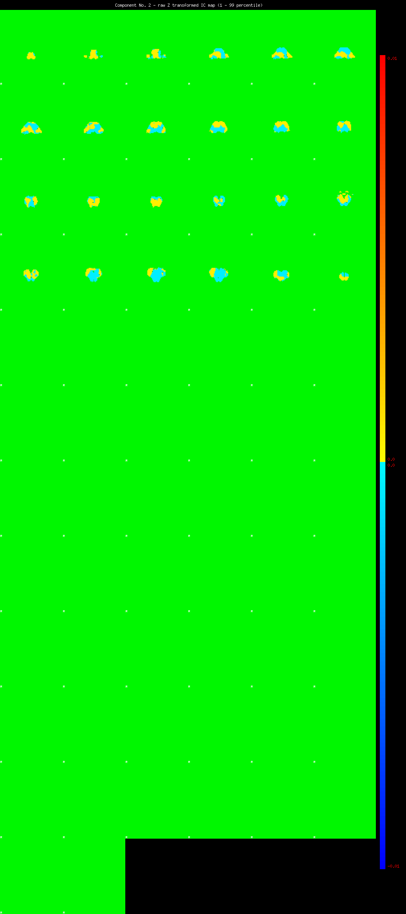

Component 2 Mixture Model fit


IC_2 Mixture Model fit
Means : -0.000000 3.632641 -1.639183
Vars : 1.000000 3.117677 0.000158
Prop. : 0.960906 0.039094 0.000000
This page produced automatically by MELODIC Version 3.10 - a part of FSL - FMRIB Software Library.